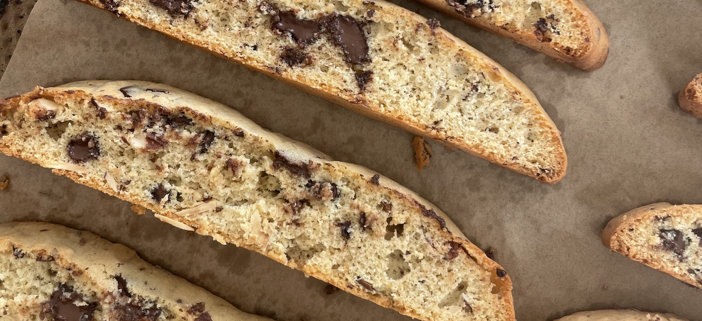

Chocolate Almond Biscotti

Ensure you store in an air-tight container
Ingredients
- 1/2 cup unsalted butter, softened
- 3/4 cup sugar
- 3 eggs
- 2 tsp vanilla extract
- 2 cups all purpose flour
- 2 tsp baking powder
- 3/4 tsp diamond crystal kosher salt
- 1/2 cup toasted, sliced almonds
- 1/2 cup semi-sweet Chocolate chips
Directions
- Preheat the oven to 325F. Line a baking sheet with parchment paper
-
Add butter and sugar to a large mixing bowl.
Cream together until well-combined. Add eggs,
one at a time, and mix until well combined.
Add vanilla and almond extract and mix to incorporate.
Add flour, baking powder, kosher salt, sliced almonds,
and chocolate chips, and mix until evenly combined
- Transfer dough to a baking sheet and use damp hands to shape into a 11”x4” log.
- Bake until puffed and very lightly browned around the edges, about 25-30 minutes.
- Remove from the oven and let cool for 5 minutes or until cool enough to handle.
Cut crosswise into 12-14, 1”-thick slices of biscotti.
- Transfer to a parchment-lined baking sheet cut side up.
Bake again until lightly browned, about 14-16 minutes
- Remove from the oven and let cool completely